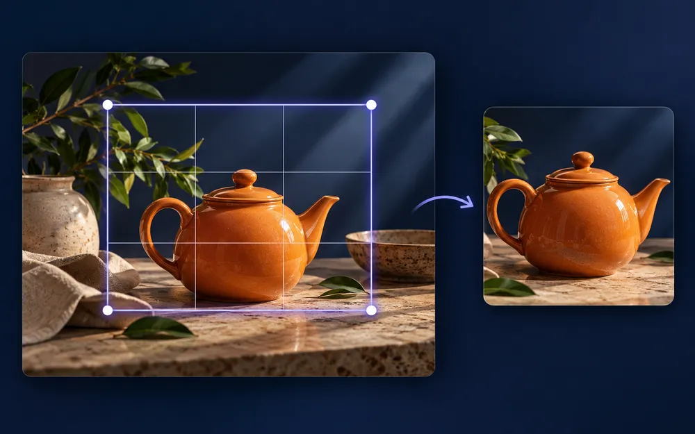
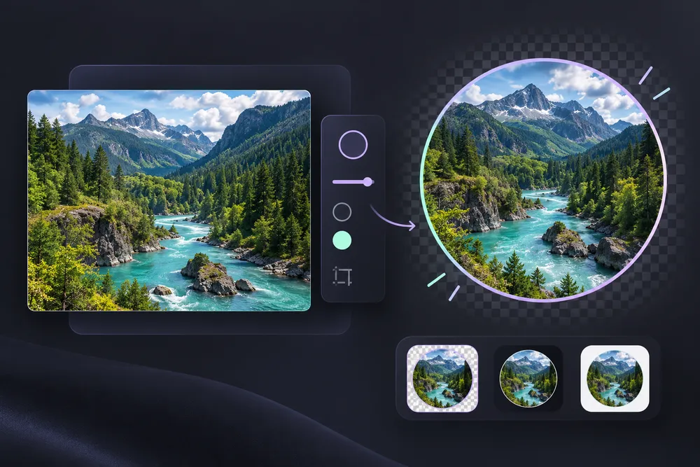
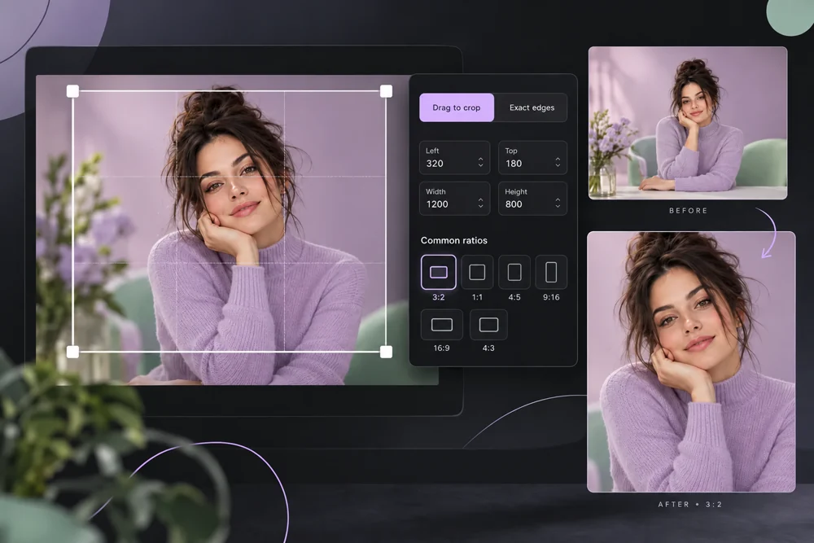
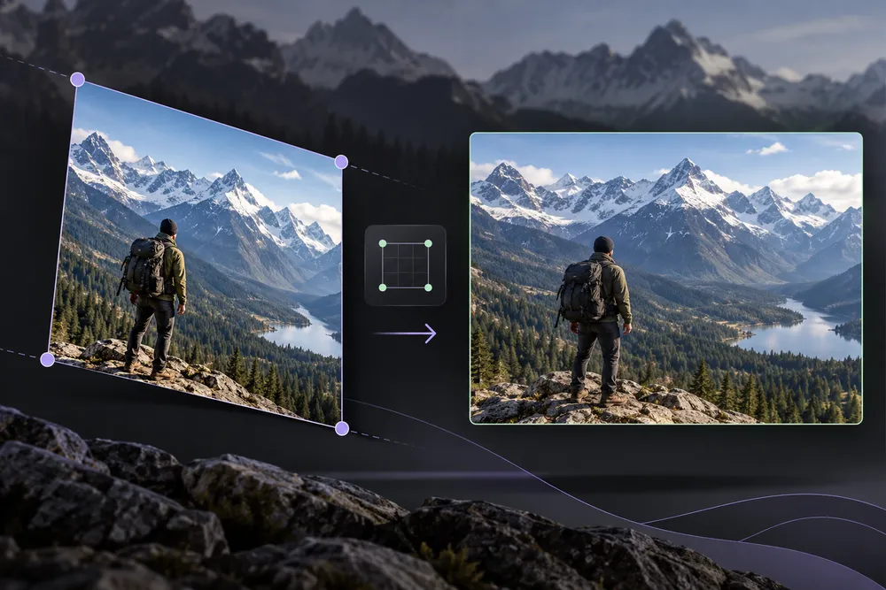
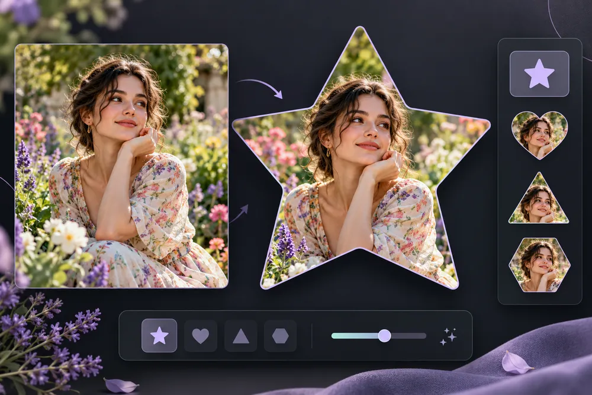
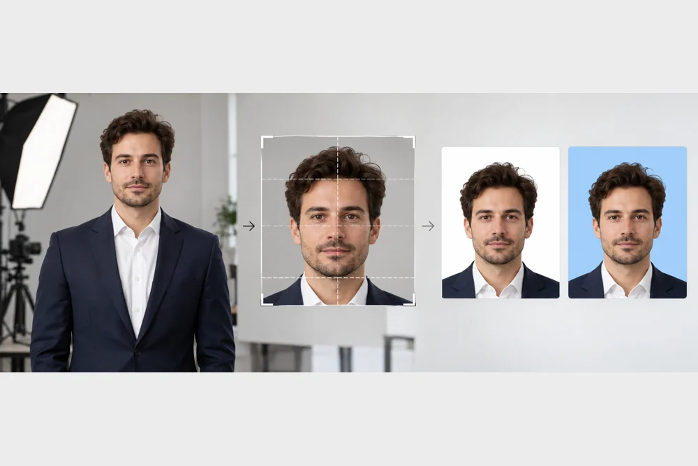

Image Cropping & Framing
Explore image cropping & framing with dedicated controls, original visual guides and clear processing information.
6 tools

Image Cropper
A stronger frame can make the same photograph tell a clearer story.
Browser workspace · Open tool ↗
Circle Crop Image
Create a circular avatar with genuinely transparent corners.
Browser workspace · Open tool ↗
Aspect Ratio Cropper
Drag the crop box or enter exact edges, with common ratio presets.
Browser workspace · Open tool ↗
Perspective Crop & Straighten
Move four corner points to flatten an angled page or sign.
Browser workspace · Open tool ↗
Custom Shape Cropper
Clip a photo to a star, heart, triangle or hexagon.
Browser workspace · Open tool ↗
Passport / ID Photo Maker
Compose a 600 × 600 pixel, 300 DPI photo template with an optional background fill.
Browser workspace · Open tool ↗